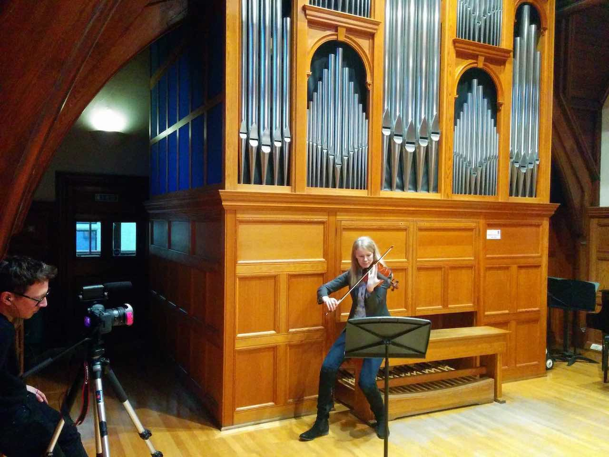
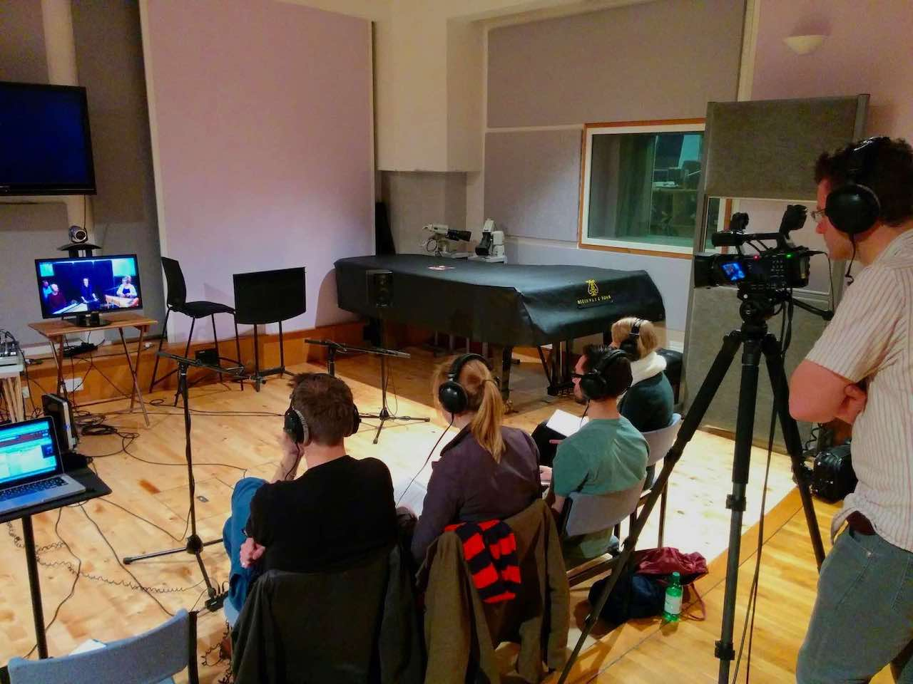
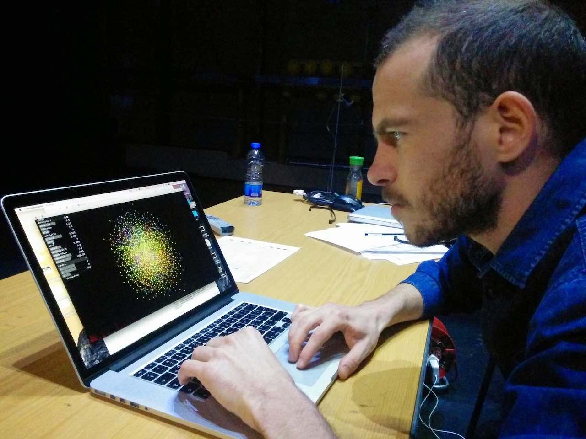
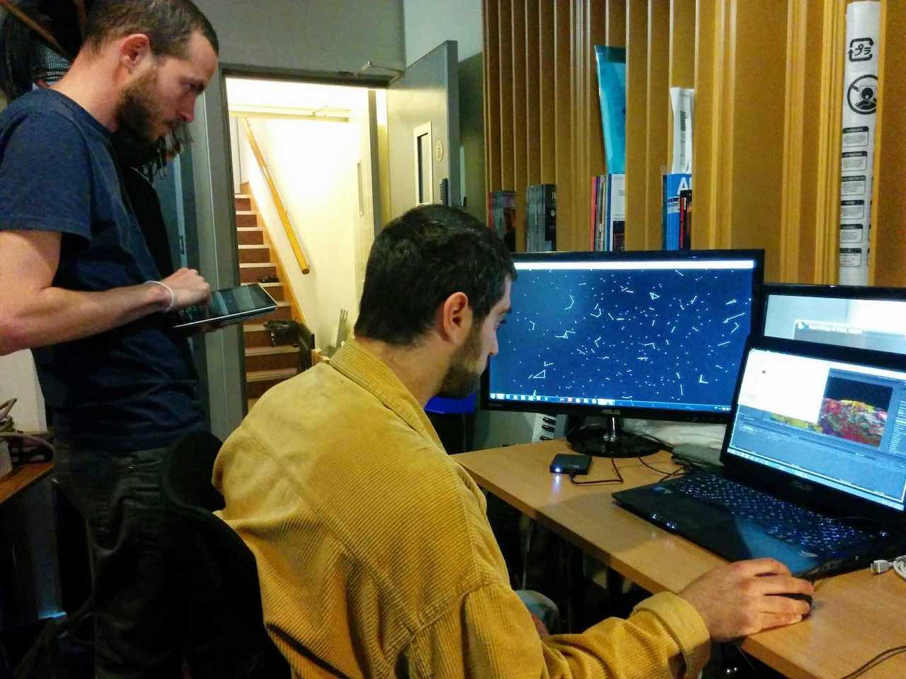
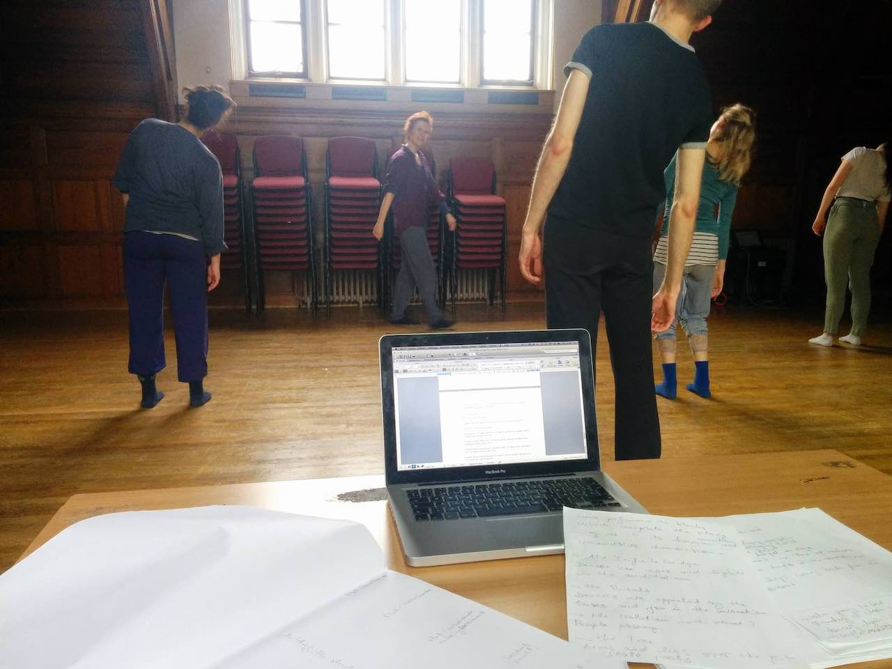
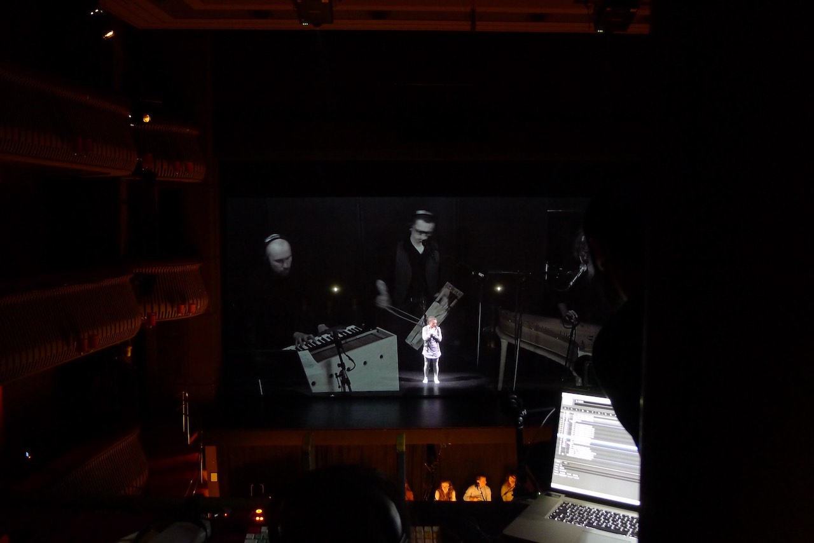
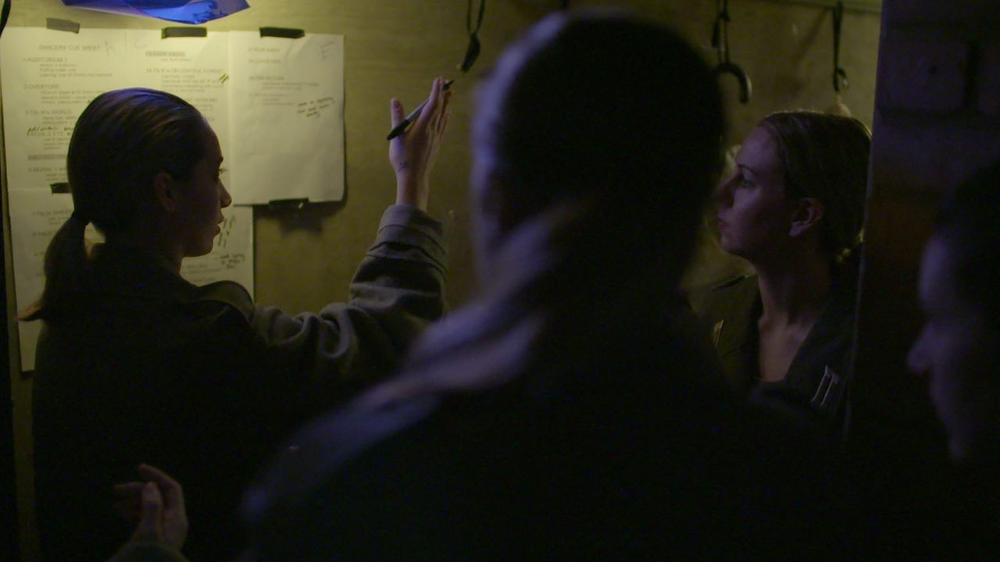
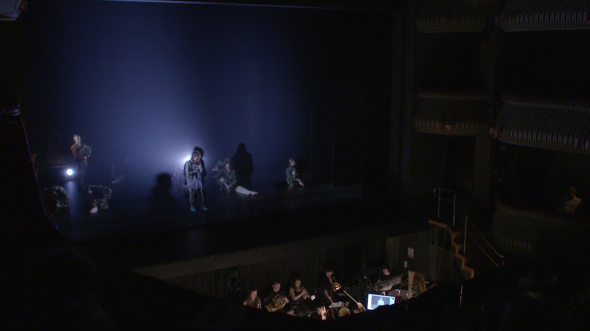

The Infinite Bridge is a multi-disciplinary live performance project connecting artists and creative professionals across cultures and practices.
The show uses new orchestral music, theatre, dance and digital technologies to tell the story of Talia, a young girl trapped in a mundane existence who escapes into her dream world.
The Infinite Bridge is an evolving artistic venture that explores hybrid forms of story-telling and aims to engage the audience into a unique emotional journey. The project was launched in partnership with the Royal College of Music in a multi-disciplinary live performance on May 5th during the 2015 Networking Arts Production Workshop.
As part of the Premiere, the performance featured live link-ups with dancers at the MACBA contemporary arts museum of Barcelona, traditional Nordic instrumentalists at the Sibelius Academy in Helsinki and a horn player in the Royal Danish Academy of Music in Copenhagen.
Writer / Director Peter Cox MBE said,
“This is a truly inspiring project. To work so closely with our exceptional collaborators and the next generation of artists on such an inventive and innovative is, at times, quite simply breathtaking. In a time of austerity, investment in the arts is the first casualty, but these young people have such immense talent and commitment that we, as a society, must find ways to liberate their potential. The Infinite Bridge is a beautiful and powerful story of our times and is the most exciting and challenging project I have taken on in my long career in theatre and television.”







